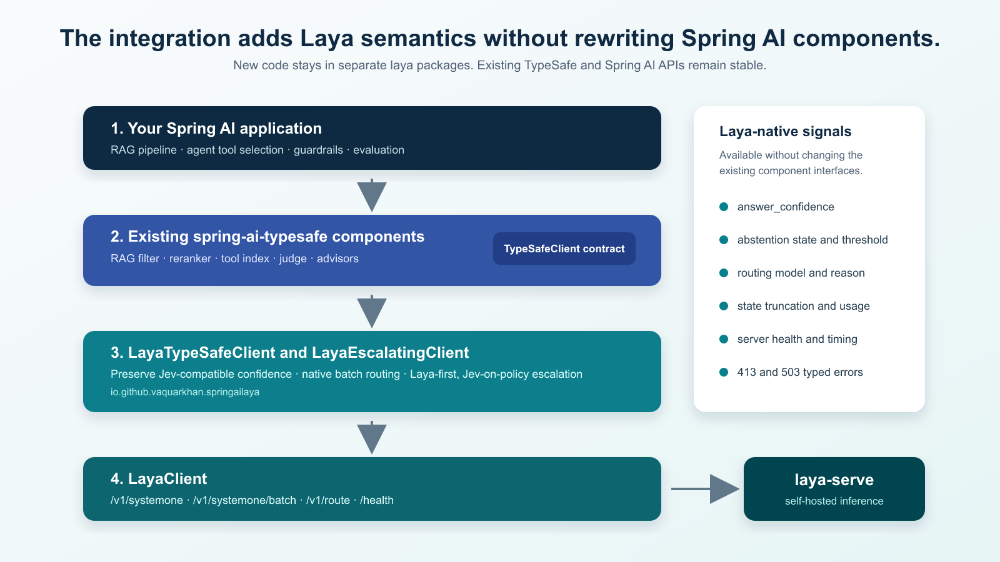
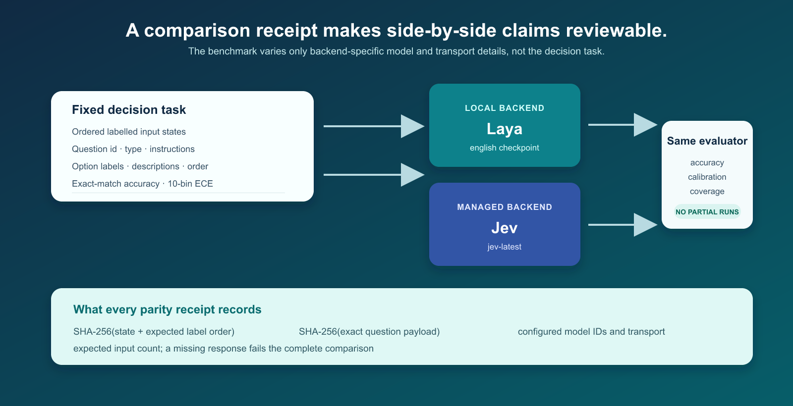

Five takeaways
It serves the typed System One protocol already used by spring-ai-typesafe. Existing RAG, judge, guardrail and tool-selection components can keep their application APIs.
Laya returns confidence, routing, abstention, truncation and batch signals that the base TypeSafe client cannot preserve. The Laya adapter makes those signals available and keeps existing Jev-oriented thresholds meaningful.
It is a natural fit for private RAG triage, support routing, bounded tool selection and local development. Use a managed decision path where the workload calls for it.
The same field name represents different statistics in Laya and Jev. Measure confidence on held-out domain data, select the metric deliberately, and make low-confidence routing explicit.
A credible Laya/Jev comparison fixes the data, question payload, option order and evaluator. It records hashes and rejects a partial result rather than producing an attractive but incomplete chart.
In this guide
- Why a local decision backend
- Architecture: stable Spring AI APIs, Laya-specific semantics
- Run Laya and configure Spring Boot
- Make typed decisions and preserve confidence meaning
- Use Laya with RAG, tool selection and evaluations
- Build a Laya-first routing policy
- Measure Laya and Jev fairly
- Operational guidance and next steps
Why add a local decision backend?
Spring AI applications often need a small decision before they call a language model, retrieve context, invoke a tool, or ship an answer. The decision is usually structured: choose a support queue, determine whether a passage answers a question, judge whether a tool applies, or decide whether a response needs another review pass. These decisions do not need a paragraph of generated text. They need a typed answer that an application can threshold, log and route.
TypeSafe's Jev and Laya both use the System One approach. A request carries state and typed questions. The answer carries a choice, a score or a noul probability. That shared contract makes Laya practical for existing spring-ai-typesafe code. Laya also changes the deployment shape: its weights are open under Apache 2.0, it can run beside the application, and it can be trained from domain-labelled decisions.
The practical position: Laya gives teams a local path when data handling, offline development, local control or fine-tuning are requirements. Jev remains available through the same application contract when a managed decision service fits the workload. The engineering question is not “which model wins?” It is “which decision path fits this request, this policy and this operating model?”

Where Laya starts well
- Private RAG triage: screen retrieved internal passages where sending content outside the environment is not appropriate.
- Support-ticket routing: choose among a stable group of queues such as billing, account access and technical support.
- Agent tool selection: select among a bounded set of tool descriptions before the agent invokes a tool.
- Local integration testing: exercise the actual System One HTTP contract without a hosted key or external network dependency.
- Domain adaptation: fine-tune Laya after building a labelled decision set that represents the application's real records.
Architecture: add Laya semantics without rewriting Spring AI components
The implementation is deliberately additive. All new Java classes are in io.github.vaquarkhan.springailaya, and starter classes live in io.github.vaquarkhan.springailaya.autoconfigure. Existing TypeSafe and Spring AI types retain their names and method signatures. That matters for adoption: maintainers can inspect the new package as a focused change, and existing applications can introduce Laya incrementally.

TypeSafeClient. The adapter turns that contract into Laya calls and surfaces Laya-only information through LayaClient.The native client: LayaClient
LayaClient models the endpoints Laya adds beyond the common Jev contract:
POST /v1/systemonefor one state and a set of typed questions.POST /v1/systemone/batchfor one question set over many states.POST /v1/routeto inspect the checkpoint selection without running inference.GET /healthfor liveness, loaded checkpoints and the actual execution device.
The client also handles Laya's optional bearer authentication, routing controls, request-size checks and typed error conditions. A 413 means the request is too large. A 503 means the server's admission limit is full and may include Retry-After. These distinctions let an application retry the right condition and fix the right one.
The adapter: LayaTypeSafeClient
LayaTypeSafeClient extends TypeSafeClient. This lets existing component builders use it directly. When a RAG filter calls systemOneAll, the adapter groups requests with the same questions and sends a Laya batch request. It keeps result slots in input order and isolates a validation refusal to its individual item where possible.
The adapter also addresses a semantic problem. Laya's native confidence on choice and score answers is a normalized entropy measure. Jev's confidence is calculated differently. Passing the former into a threshold tuned for the latter silently changes application behavior. The adapter offers three explicit choices:
| Metric | Meaning | When to choose it |
|---|---|---|
JEV (default) | Laya's x_jev_confidence, or the same formula recomputed from probabilities when strict server mode does not return it. | Existing TypeSafe thresholds and JevConfidenceGate configurations should retain their intended meaning. |
ANSWER | answer_confidence, the probability mass on the selected answer. Laya documents this as the calibrated quantity. | You have tuned thresholds on labelled Laya data. |
ENTROPY | Laya's native distribution-concentration statistic. | You explicitly want to use the server's native confidence measure and have evaluated it. |
Run Laya and configure Spring Boot
Start a local server
Use an isolated Python environment. The CPU setup is a development baseline. A production system should benchmark its own GPU, device settings, checkpoint mix and concurrent load.
# Create an isolated environment and install the serving extras.
uv venv --python 3.12
uv pip install --torch-backend=cpu "laya[serve]"
# Use a predictable English-only local setup.
LAYA_DEVICE=cpu \
LAYA_MODELS=english \
LAYA_DEFAULT_MODEL=english \
LAYA_PRELOAD=1 \
LAYA_THREADS=8 \
laya-serve
curl http://localhost:8000/healthLAYA_PRELOAD=1 makes startup wait for the checkpoint rather than deferring that work to the first production request. The health response identifies loaded checkpoints and the actual device. Record both in deployment evidence because a configured GPU preference and the device that actually served the checkpoint can differ.
Enable the Spring Boot starter
# application-laya.properties
spring.ai.laya.base-url=http://localhost:8000
spring.ai.laya.model=auto
spring.ai.laya.confidence-metric=jev
# A CPU starting point. Tune from measured traffic.
spring.ai.laya.rows-per-batch-call=16
spring.ai.laya.max-concurrent-batch-calls=1
spring.ai.laya.timeout=90sSetting spring.ai.laya.base-url activates LayaAutoConfiguration. It supplies the application's TypeSafeClient before the normal Jev auto-configuration. If an application defines its own TypeSafeClient or LayaClient bean, that user-defined bean wins.
Why the 90-second default? During the local CPU tests, a long multi-question RAG batch exceeded a 30-second timeout. The upstream document filter correctly failed open, passing its documents through unscreened. Use a measured p95 and p99 timeout for the actual workload, alert on fail-open events, and avoid treating any default as a production SLO.
Make typed decisions and inspect the full result
The basic code uses the existing TypeSafe question classes. That is intentional: applications do not have to create a second domain vocabulary just to select a local backend.
@Service
class TicketRouter {
private final TypeSafeClient client;
TicketRouter(TypeSafeClient client) { this.client = client; }
String route(String ticket) {
Choice department = Choice.builder()
.instructions("Which team should handle this customer request?")
.option("billing", "payments, invoices and refunds")
.option("technical", "bugs, outages and login issues")
.option("account", "profile, identity and subscription access")
.build();
SystemOneResponse result = client.systemOne(
Map.of("ticket", ticket),
Map.of("department", department));
return result.choiceValue("department");
}
}When the code needs Laya-specific data, use LayaClient. This is the appropriate place to examine the actual calibrated confidence, a server abstention, routing facts or input truncation.
LayaResponse decision = layaClient.systemOne(
SystemOneRequest.builder()
.state(Map.of("ticket", ticket))
.question("department", department)
.build(),
LayaOptions.builder().minConfidence(0.75).build());
boolean needsReview = decision.anyAbstained();
boolean inputWasCut = decision.usage().wasTruncated();
double calibrated = decision.answerConfidence("department").orElse(0.0d);
String checkpoint = decision.routing() == null ? "unknown" : decision.routing().model();Keep existing Spring AI components and make batch behavior visible
The Laya integration is most useful where an upstream component already produces many requests with the same question set. Retrieval is the canonical case. A document filter asks the same four questions about every passage: relevance, answer evidence, contradiction and prompt injection. A reranker asks the same answer-relevance question about every passage.
@Bean
JevDocumentFilter documentFilter(TypeSafeClient client) {
return JevDocumentFilter.builder(client)
.policy(JevDocumentFilter.Policy.defaults())
.build();
}
@Bean
JevDocumentReranker documentReranker(TypeSafeClient client) {
return JevDocumentReranker.builder(client)
.topK(5)
.build();
}Both components already speak TypeSafeClient. With LayaTypeSafeClient, compatible requests become Laya batch calls without changing the builder API. The adapter sorts states by approximate size before chunking because a batch pads every state to the longest sequence. The CPU-safe default is at most 16 rows, where a row is one state times one question, and one batch call in flight. These are starting values, not universal tuning advice.
There is an important application behavior to preserve. JevDocumentFilter fails open: when it cannot screen a passage, it keeps that passage rather than shrinking the answer context silently. This makes availability visible but requires monitoring. If the filter is part of a prompt-injection control, pair it with deterministic controls and create an alert for the fail-open log line.

Build a Laya-first policy with a Jev escalation path
A hybrid client should route for a reason that a reviewer can explain. LayaEscalatingClient offers four named reasons: too many options, Laya failure, low calibrated confidence and server-side abstention. The listener and counters make the route observable without storing a sensitive prompt body.
# Laya: local primary backend
spring.ai.laya.base-url=http://localhost:8000
spring.ai.laya.options.min-confidence=0.75
# Jev: optional escalation backend
spring.ai.typesafe.api-key=${TYPESAFE_API_KEY}
spring.ai.laya.escalation.enabled=true
spring.ai.laya.escalation.allow-external-data-export=true
spring.ai.laya.escalation.min-answer-confidence=0.75
spring.ai.laya.escalation.max-laya-choice-options=20
spring.ai.laya.escalation.on-abstention=true
spring.ai.laya.escalation.on-failure=true| Policy event | Route | Why it is explicit |
|---|---|---|
| Choice contains more than 20 options | Jev directly | Large option spaces need their own validation strategy. The policy avoids pretending confidence alone answers that question. |
| Answer confidence meets the Laya-specific threshold | Laya locally | Measured thresholding can retain local handling for routine traffic. |
| Laya marks an answer abstained | Jev or human review | The server records that a confidence gate ran and did not clear the answer. |
| Laya is unavailable, overloaded, times out or rejects request size | Jev or application error path | The application makes its availability policy visible instead of silently assuming an answer. |
Do not use model routing as authorization. An irreversible tool invocation still needs a deterministic authorization and user-confirmation layer. A model can help decide whether a request is ready or which process should own it. It cannot replace access control.
Measure Laya and Jev with a receipt, not a decorative chart
A side-by-side benchmark must make a narrow claim. The included harness compares the models on the same fixed examples, the same exact choice question, the same option labels, descriptions and ordering, and the same evaluator. It records SHA-256 hashes of the ordered state-plus-label data and the serialized question payload. It also writes the configured model IDs and transport path.

What has been measured locally
The repository's local run used Laya 0.4.19, the English checkpoint, CPU inference and zero-shot choice questions. It measured 0.910 accuracy on 200 SST-2 examples, 0.935 on 200 AG News examples and 0.370 on 154 Banking77 examples. Its answer_confidence ECE was 0.050 on SST-2, 0.067 on AG News and 0.527 on Banking77. These values identify the kinds of decision spaces that should receive more or less validation. They are not a deployment recommendation by themselves.
At an answer_confidence floor of 0.75, Laya served 80% of the SST-2 sample at 95.6% accuracy and 87% of the AG News sample at 97.1%. On the 77-label Banking77 sample, confidence was not an effective gate. That is why the hybrid policy routes large option spaces by count rather than making a confidence-only promise.

Run a strict parity comparison
# PowerShell. The key is read by the client but never printed.
$env:LAYA_BASE_URL = 'http://localhost:8000'
$env:TYPESAFE_API_KEY = 'your-Jev-key'
mvn -pl laya-benchmarks exec:java `
'-Dbench.requireBoth=true' `
'-Dbench.laya.model=english' `
'-Dbench.jev.model=jev-latest'Strict mode stops if the Jev key is missing. It also stops if either backend returns fewer results than the fixed input count. Read the complete benchmark protocol before publishing a comparison, especially the distinction between a model-quality comparison and a latency comparison.
Apply the decision lifecycle to your own data
Embedding Studio's documentation provides useful operating practices even though Studio, Laya and Jev are separate systems. It centers decisions on a labelled lifecycle: fit where appropriate, calibrate confidence, keep a held-out test set, route uncertain cases to review, retain an audit record and monitor drift. Those practices strengthen a Laya deployment because local operation does not remove the need for evidence.
- Define a narrow decision. Start with one process owner or one tool decision. Avoid a broad taxonomy in the first rollout.
- Collect labelled examples. Preserve the real distribution, including ambiguous cases, long inputs and failure paths.
- Hold out data before tuning. Do not use it to choose wording or thresholds.
- Measure accuracy, ECE and coverage. A threshold must improve the quality of the served subset, not merely route a large percentage automatically.
- Write routing policy in code and test it. Include option count, confidence, abstention, service error and action impact.
- Record versions and decisions. Capture checkpoint revision, question-payload version, threshold and escalation reason.
About the Studio connection. Studio's documentation describes fitted heads, calibration, precision bands, review routing, audits and drift monitoring. It does not prove a Laya-versus-Jev accuracy result, because Studio uses a separate vegaml-backed protocol. Read the Embedding Studio perspective for the precise boundary.
Operational guidance
Record the model reality, not just configuration
Use LayaClient.health() in startup checks and telemetry. Record the Laya server version, checkpoint revision, loaded checkpoint, actual device and CPU fallback count. A deployment should be able to answer “what served this decision?” without relying on a mutable configuration file.
Make truncation visible
Requests can remain valid while Laya trims part of a state to fit its token budget. Check LayaUsage.wasTruncated() and alert when it occurs. For a high-impact decision, route a truncated input to a review or alternate path rather than treating it as a complete read.
Test routing policy separately from model quality
Unit tests should confirm that a 77-option choice routes where you expect, an abstained answer follows the correct branch and a 503 behavior follows the availability policy. Model-quality tests should use held-out labelled data. Keep these concerns separate so a model improvement does not change your authorization path by accident.
Start in observation mode
Before an automatic action, log the candidate route, selected label, confidence metric, threshold, checkpoint and policy outcome. Compare them with existing outcomes. Only after the team has a measured precision and an acceptable review rate should it enable unattended handling for a class of action.
Conclusion
Adding Laya to spring-ai-typesafe is valuable because it introduces a local decision path while keeping the application integration stable. It becomes a responsible production option when applications preserve the semantic differences that a base-URL switch hides: confidence, abstention, routing, truncation, batching and failure behavior.
The next step is not a universal model claim. It is a strict side-by-side parity run on a representative labelled dataset, followed by a small Laya-first workflow with visible escalation. That sequence gives developers a local capability and gives reviewers the evidence to decide where it belongs.
Sources and further reading
Laya HTTP API · Laya and Jev published comparison · Embedding Studio documentation · local analysis · parity protocol
External documentation was rephrased for compliance with licensing restrictions.